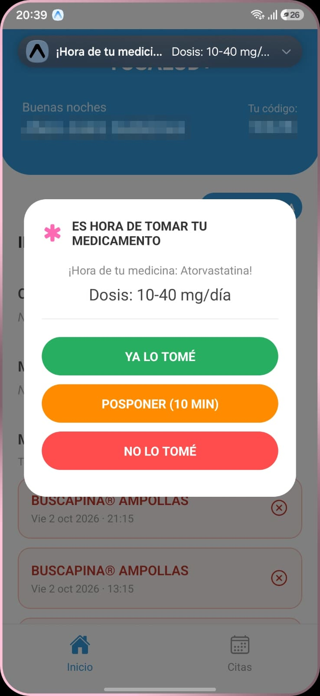
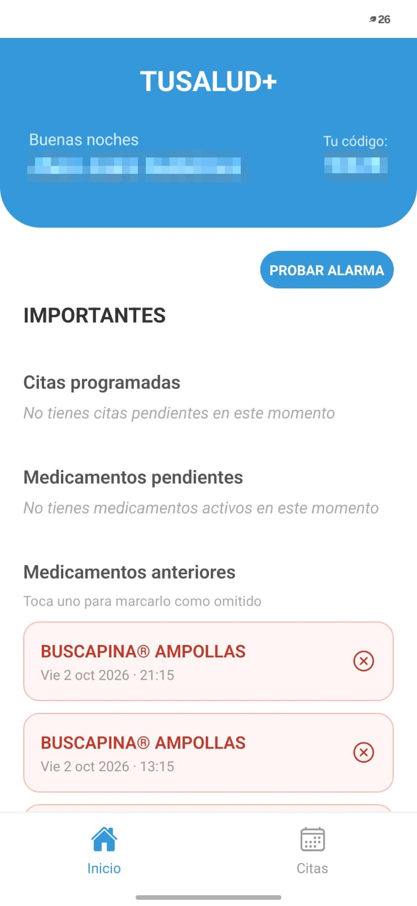

Sus medicamentos, a la hora que son
TuSalud+ le avisa cuándo tomar cada medicamento. Usted confirma con un botón. Así de sencillo.
Lo invitamos a probarla gratis antes de que salga al público y a contarnos qué le parece. También puede llamarnos al 322 595 1399.
Es gratis. No pedimos datos de tarjeta. Por ahora, solo para celulares Android.
Seis medicamentos, cinco horarios distintos, todos los días.
No es falta de memoria. Es que llevar la cuenta de varios tratamientos a la vez es difícil para cualquiera, a cualquier edad.
TuSalud+ lleva esa cuenta por usted. Le avisa a la hora exacta de cada medicamento, le dice cuál es y qué cantidad debe tomar. Usted toca un botón para confirmar y listo.
Y si quiere, un familiar de confianza puede acompañarlo desde su propio celular. Usted decide si lo invita, y puede quitarlo cuando quiera.
Cómo se usa
Instale la aplicación
Durante la prueba piloto, nuestro equipo le ayuda a instalarla en su celular. Es gratis.
Cree su cuenta
Escriba su nombre, su correo y su teléfono. La aplicación le entrega un código de cuatro letras y números. Guárdelo.
Espere el aviso
A la hora de cada medicamento, el celular suena y muestra un aviso grande con el nombre y la cantidad. Usted toca «Ya lo tomé».
Así se ve en su celular
Letras grandes, botones claros y nada de pasos de más.

El aviso
Suena a la hora exacta y le dice qué medicamento y qué dosis tomar.

Su inicio
Su código de enlace, sus citas y sus medicamentos, de un vistazo.
Qué hace la aplicación por usted
Le avisa a la hora exacta
El celular suena y vibra. En la pantalla aparece el nombre del medicamento y la cantidad que le corresponde. No tiene que recordar nada.
Tres botones claros
«Ya lo tomé» si ya se lo tomó. «Posponer» si está ocupado: la aplicación le vuelve a avisar en diez minutos. «No lo tomé» si no se lo va a tomar, para que quede registrado.
Le recuerda sus citas
Si tiene cita con el médico, la aplicación se lo avisa. Ya no depende de acordarse ni del papelito de la cita. Además, ve cuál es su próxima toma y a qué hora.
Funciona sin internet
Los avisos suenan aunque se le acaben los datos o esté en un lugar sin señal.
Usted manda
Si quiere que un hijo o un familiar le ayude a organizar los medicamentos, le comparte su código de cuatro caracteres. Sin ese código, nadie puede ver nada suyo. Si lo comparte y después cambia de opinión, puede romper esa conexión cuando quiera.
Esto no es un aparato de vigilancia. Es una ayuda que usted controla.
Lo invitamos a la prueba piloto
Antes de lanzar TuSalud+ queremos que la usen personas como usted y nos digan si es fácil, si les sirve y qué debemos mejorar.
Se inscribe
Llena el formulario de esta página, usted mismo o con ayuda de un familiar.
Lo llamamos
En menos de 24 horas hábiles lo contactamos y le ayudamos a dejar todo listo en su celular.
La usa y nos cuenta
La usa en su día a día y después nos cuenta cómo le fue, en una encuesta o entrevista corta.
Lo que gana al participar
- Es gratis. No paga nada y no le pedimos datos de tarjeta.
- Le ayudamos a empezar. Nuestro equipo lo acompaña en la instalación y en las dudas.
- Menos cosas que recordar. Desde el primer día, el celular le avisa qué tomar y cuándo.
- Para celulares Android. Por ahora, la prueba funciona solo en celulares Android.
- Su opinión cuenta. Lo que nos diga nos ayuda a hacer una aplicación más fácil para todos.
Lo que le garantizamos
- Los avisos suenan sin internet. Quedan guardados en su celular.
- Su información es suya. No vendemos ni compartimos sus datos de salud. Cumplimos la Ley 1581 de 2012.
- Nadie lo ve sin su permiso. Solo la persona a quien usted le dio su código puede ver sus medicamentos.
- Lo esencial es gratis y va a seguir siéndolo. Los avisos, las citas y la conexión con un familiar no cuestan nada.
Inscríbase en la prueba piloto
Déjenos sus datos y lo contactamos en menos de 24 horas hábiles. Si prefiere, un familiar puede llenar el formulario por usted.
¿Solo tiene una pregunta? Escríbala en el último campo y le respondemos.
¡Recibimos su inscripción!
Gracias por querer probar TuSalud+. Lo contactaremos en menos de 24 horas hábiles para ayudarle a empezar.
Preguntas frecuentes
¿Tengo que saber usar el celular?
Si sabe contestar una llamada y tocar un botón, sabe usar TuSalud+. Cuando suena el aviso aparecen tres botones grandes y de colores: «Ya lo tomé», «Posponer» y «No lo tomé». No hay más. Y durante la prueba piloto, nosotros le ayudamos.
¿Cuánto cuesta participar?
Nada. La prueba piloto es gratis y no le pedimos datos de tarjeta.
¿Qué tengo que hacer si participo?
Nosotros le ayudamos a instalarla. Usted la usa en su día a día y al final nos cuenta cómo le fue, en una encuesta o entrevista corta.
¿Sirve en iPhone?
Por ahora la prueba piloto es solo para celulares Android. Si no sabe qué celular tiene, márquelo en el formulario y nosotros le ayudamos a revisarlo.
¿Cuánto cuesta después?
Los avisos de medicamentos, las citas y la conexión con un familiar son gratis y lo seguirán siendo. Existe un plan completo de $20.000 al mes, pero no lo necesita para lo esencial.
¿Me va a estar vigilando mi familia?
No. Nadie ve nada suyo a menos que usted le comparta su código. Y puede quitárselo cuando quiera.
¿Qué pasa si no tengo internet?
Los avisos ya programados suenan de todos modos.
¿Y si toco el botón por error?
No pasa nada grave. Puede revisar en la aplicación qué quedó registrado y corregirlo.
¿Quién puede registrar mis medicamentos?
Usted, o el familiar a quien le haya compartido su código. Nadie más.
¿Puedo dejar la prueba cuando quiera?
Sí, cuando quiera y sin dar explicaciones. Si lo pide, borramos sus datos.
Deje que el celular se acuerde por usted
Inscríbase en la prueba piloto. Es gratis y lo acompañamos en todo.